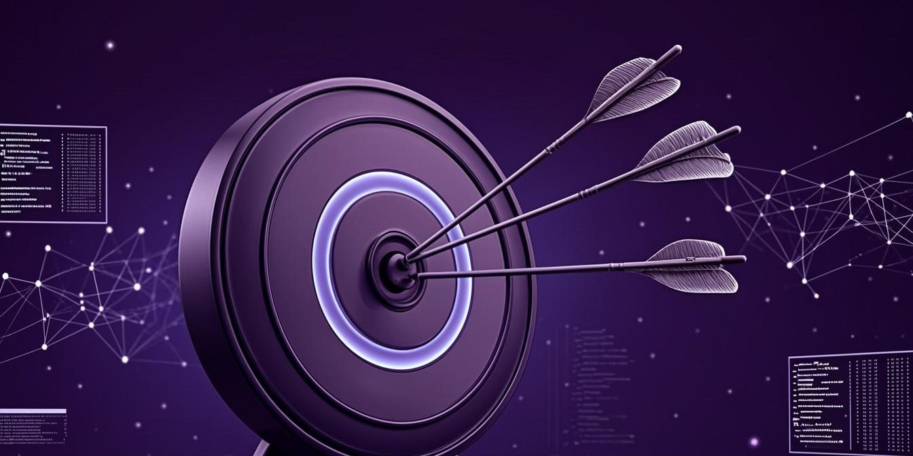

Gestao e Negocios
OKRs e gestão por metas: como alinhar sua equipe e multiplicar resultados
Gestão por metas eficaz começa com objetivos mensuráveis e resultados-chave que realmente movem o negócio. OKRs são o método direto para transformar estratégia em ação, mantendo toda equipe focada no que gera resultados e lucro, sem desperdício de energia em atividades que não impactam o crescimento.

Em 27 anos fundando startups e entregando mais de 1.200 projetos, vi que a falta de alinhamento entre metas e operação é o principal vilão do crescimento. Muitas equipes trabalham intensamente, mas sem direção clara, como navios sem bússola. Gestão por metas com OKRs resolve isso de forma prática, convertendo a visão da empresa em objetivos tangíveis que todos entendem e se comprometem.
O que são OKRs e por que eles transformam sua gestão
OKRs, sigla para Objetivos e Resultados-Chave, são um método de gestão que estabelece metas ambiciosas e mensuráveis para orientar toda a organização. Diferente de sistemas tradicionais de metas, os OKRs focam em estabelecer objetivos desafiadores, que podem não ser 100% atingidos, mas que forçam a equipe a pensar grande. A estrutura simples de objetivos e resultados-chave cria clareza sobre o que realmente importa, eliminando a ambiguidade e o ruído operacional que consome tempo e recursos.
Na minha prática, empresas que implementam OKRs corretamente reduzem em até 40% o tempo gasto em reuniões sem propósito e aumentam a velocidade de execução. O segredo está no alinhamento: cada objetivo estratégico se desdobra em resultados-chave específicos, mensuráveis, alcançáveis, relevantes e com prazo definido. Isso cria um sistema onde cada membro da equipe entende como seu trabalho contribui para o todo, multiplicando os resultados em vez de apenas somar esforços. Em um projeto recente com uma fintech, a implementação de OKRs resultou em um aumento de 35% na eficiência operacional no primeiro trimestre, algo impensável com o sistema anterior de metas.
- Objetivo: Define o que você quer alcançar, sendo qualitativo e inspirador, como "Expandir nossa presença no mercado de e-commerce"
- Resultados-Chave: São as métricas que comprovam o progresso em direção ao objetivo, como "Aumentar vendas online em 30%" ou "Adquirir 10.000 novos clientes"
- Alinhamento: Garante que todos os níveis da organização trabalhem em direção aos mesmos objetivos, criando sinergia e foco coletivo
- Rastreamento: Monitoramento regular do progresso, geralmente trimestral, com ajustes ágeis durante o período
- Ambição: Objetivos desafiadores que forçam a equipe a inovar e sair da zona de conforto
OKRs vs. metas tradicionais: a diferença que gera resultados
Muitas confundem OKRs com sistemas tradicionais de metas, mas a abordagem é fundamentalmente diferente. Enquanto metas tradicionais frequentemente se concentram em atividades e resultados garantidos, os OKRs focam em resultados impactantes e aprendizados, mesmo que não sejam totalmente alcançados. Essa pequena mudança de mentalidade transforma a forma como as equipes operam, passando de "cumprir tarefas" para "gerar resultados", o que é crucial para o crescimento sustentável. Em uma consultoria que liderei, a mudança para OKRs reduziu em 60% as iniciativas que não geravam impacto real no negócio.
Na minha mentoria, observo que empresas que adotam OKRs desenvolvem uma cultura de maior responsabilidade e autonomia. Como os objetivos são transparentes e compartilhados, cada equipe entende o porquê de suas atividades, não apenas o quê fazer. Essa clareza estratégica elimina o micromanagement e libera o potencial criativo da equipe, que pode encontrar caminhos inovadores para atingir os resultados-chave definidos. Um cliente meu, uma startup de logística, implementou OKRs e viu sua equipe de operações desenvolver uma solução de roteirização que reduziu custos em 25%, algo que nunca teriam sido incentivados a pensar em um sistema tradicional de metas.
| Métrica | Metas Tradicionais | OKRs |
|---|---|---|
| Foco | Atividades e entregas | Resultados impactantes |
| Ambição | Alcançáveis 100% | Desafiadores (70% já é bom) |
| Alinhamento | Geralmente vertical | Horizontal e transparente |
| Atualização | Anual ou semestral | Trimestral com revisões |
| Cultura | Controle e cumprimento | Autonomia e experimentação |
Como definir OKRs eficazes que realmente movem o negócio
Definir bons OKRs começa com uma pergunta simples: o que realmente importa para o crescimento do seu negócio agora? Os objetivos devem ser inspiradores e orientar a direção estratégica, enquanto os resultados-chave devem ser mensuráveis e específicos o suficiente para validar o progresso. Uma boa prática é limitar de 3 a 5 objetivos por período, cada um com 2 a 4 resultados-chave, para evitar a dispersão que anula o poder do método. Na minha experiência, equipes que tentam cobrir tudo geralmente não conseguem realizar nada de significativo.
Para transformar sua estratégia em OKRs eficazes, comece com o nível organizacional: quais os objetivos da empresa para o próximo trimestre? Depois, desdobre esses objetivos para cada departamento e indivíduo, garantindo que todos os OKRs individuais contribuam diretamente para os objetivos da equipe e da empresa. Essa cascata de alinhamento cria um sistema onde cada esforço se multiplica, em vez de apenas se somar, gerando resultados exponenciais em vez de lineares. Um exemplo prático: se o objetivo da empresa é "Expandir presença no Sudeste", o de marketing pode ser "Aumentar reconhecimento de marca em 40%" e o resultado-chave "Alcancar 500.000 impressões qualificadas no Instagram".
Objetivo: Expandir nossa presença digital. Resultados-Chave: 1) Aumentar tráfego orgânico em 50%. 2) Gerar 500 leads qualificados por mês. 3) Aumentar taxa de conversão em 15%. 4) Reduzir CAC em 20%.
Implementando OKRs na sua empresa: passo a passo prático
A implementação de OKRs requer uma abordagem estruturada mas flexível. Comece com um workshop de alinhamento com a liderança, definindo os objetivos estratégicos para o próximo período. Depois, cascateie esses objetivos para todas as equipes, garantindo que cada equipe entenda como seu trabalho contribui para o todo. É crucial envolver a equipe no processo de definição dos resultados-chave, pois o comprometimento vem da participação, não da imposição. Na minha mentoria, costumo usar workshops de dois dias com equipes-chave para garantir que todos se apropriem do processo.
Na minha experiência, o maior erro ao implementar OKRs é torná-los um exercício burocrático, sem conexão real com o dia a dia da operação. Para evitar isso, crie um sistema de revisão semanal onde as equipes atualizem o progresso em direção aos resultados-chave. Essas revisões rápidas, de 15 a 30 minutos, mantêm o foco e permitem ajustes ágeis antes que pequenos desvios se tornem problemas grandes. Lembre-se: OKRs são uma ferramenta de gestão, não um fim em si mesmos. Uma prática que recomendo é manter um dashboard visual acessível a todos, onde o progresso dos OKRs é atualizado em tempo real, criando transparência e responsabilidade compartilhada.
Evitando as armadilhas comuns na gestão por metas
Muitas empresas abandonam OKRs após alguns trimestres por não verem resultados, mas o problema geralmente não está no método, na forma de implementação. Uma armadilha comum é vincular OKRs diretamente à remuneração, o que pode levar à definição de metas fáceis e ao medo de estabelecer objetivos ambiciosos. Outro erro é focar apenas nos resultados-chave, ignorando o componente qualitativo dos objetivos, que mantém a inspiração e a direção estratégica. Na minha trajetória, vi empresas com ótimos resultados-chave mas sem direção clara, resultando em eficiência sem propósito.
A falta de consistência também é um obstáculo frequente. OKRs exigem disciplina no acompanhamento e na revisão, muitas vezes esquecida quando a rotina operacional acelera. Para evitar isso, agende reuniões de revisão fixas no calendário da equipe e trate-as como compromissos inadiáveis. Lembre-se que o poder dos OKRs está na sua capacidade de manter a organização focada no que realmente importa, mesmo amidas distrações do dia a dia. Uma técnica eficaz é designar um "OKR Champion" em cada equipe, alguém responsável por manter o método vivo e garantir que os check-ins aconteçam regularmente.
Quer transformar sua gestão em um motor de resultados reais?. Na mentoria de Gestão e Agilidade, eu aplico isso no seu negócio real, presencial em Ribeirão Preto e São Paulo ou online.
Quero mentoria de Gestão e AgilidadeEvoluindo sua gestão por metas para o próximo nível
Quando OKRs são bem implementados, eles se tornam mais do que um sistema de gestão, transformando a cultura organizacional. Equipes que dominam o método desenvolvem uma mentalidade de resultados, onde cada membro entende seu papel no todo e se sente responsável pelo sucesso coletivo. Essa cultura de alta performance não acontece da noite para o dia, mas evolui gradualmente à medida que a disciplina do acompanhamento e a transparência dos progressos se tornam parte do DNA da empresa. Em uma scale-up que mentoriei, a adoção consistente de OKRs por dois anos transformou completamente a forma como as equipes colaboravam, reduzindo silos e aumentando a propriedade dos resultados.
Para levar sua gestão por metas ao próximo nível, combine OKRs com outras metodologias ágeis como Scrum ou Kanban, criando um sistema híbrido que atende às necessidades específicas do seu negócio. Na minha mentoria, trabalho com empresas para desenvolver essa combinação ideal, onde OKRs fornecem a direção estratégica e os frameworks ágeis garantem a execução eficiente. O resultado é uma organização que não apenas sabe para onde está indo, mas também consegue chegar lá de forma rápida e adaptável. Por exemplo, OKRs podem definir o "o quê" e o "porquê", enquanto o Scrum define o "como" e o "quando" da entrega.
Se você busca transformar sua gestão por metas em um motor de crescimento real, considere a mentoria personalizada que desenvolvi baseada nesses 27 anos de experiência prática. Nossa trilha completa de gestão e agilidade, disponível em nossa plataforma de aprendizado, oferece um passo a passo detalhado para implementar OKRs e outros sistemas de gestão que multiplicam resultados. Além disso, nosso método inclui workshops de alinhamento, templates personalizados e suporte contínuo para garantir que sua implementação tenha sucesso.
Seu próximo passo: da teoria à prática com resultados reais
A teoria dos OKRs é simples, mas a implementação eficaz exige prática e ajustes contínuos. Comece pequeno, com um único departamento ou projeto piloto, antes de escalar para toda a organização. Esse enfoque incremental permite aprender com os erros e refinar o processo sem arriscar todo o negócio. Lembre-se que o objetivo não é perfeccionismo, mas sim progresso constante em direção aos resultados que realmente importam. Na minha prática, recomendo começar com um ciclo de OKRs de 60 dias para equipes-chave, criando momentum rápido e resultados visíveis.
Transformar sua gestão por metas começa hoje, com ações concretas que levam à clareza estratégica e ao alinhamento da equipe. Defina um objetivo inspirador para o próximo trimestre, identifique os resultados-chave que comprovam seu progresso, e compartilhe essa visão com toda a sua equipe. Quando todos sabem para onde estão indo e como seu trabalho contribui para o todo, o potencial de crescimento excede qualquer previsão. Se você sentir que precisa de orientação prática, nossa mentoria oferece sessões de consultoria one-on-one para adaptar o método OKRs ao seu contexto específico, garantindo resultados tangíveis desde o primeiro ciclo.
Perguntas frequentes (FAQ)
Como diferenciar objetivos e resultados-chave em OKRs?
Objetivos são qualitativos e inspiradores, dizendo o que você quer alcançar. Resultados-chave são métricas específicas e mensuráveis que comprovam o progresso em direção ao objetivo.
Quantos OKRs devo definir por período?
Recomendo de 3 a 5 objetivos por período, cada um com 2 a 4 resultados-chave. Mais do que isso pode dispersar o foco e reduzir o poder do método.
Os OKRs devem ser 100% alcançados?
Não, a filosofia dos OKRs é ambiciosa. Alcançar 70% de um objetivo desafiador já é considerado sucesso, pois indica que a equipe está se esforçando para além da zona de conforto.
Como alinhar OKRs entre diferentes departamentos?
Crie um processo cascata onde os objetivos organizacionais se desdobram em objetivos de departamento, equipe e indivíduo, garantindo que todos contribuam para os mesmos resultados estratégicos.
Posso usar OKRs em empresas pequenas?
Sim, OKRs são especialmente úteis em pequenas empresas, onde o alinhamento é crucial para otimizar recursos limitados e garantir que todos trabalhem em direção aos mesmos objetivos de crescimento.